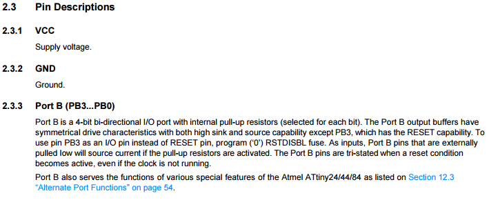
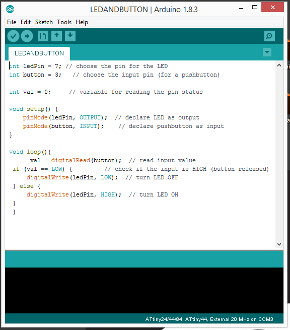

Week no. 8
Embedded Programming :
- Read a microcontroller data sheet
- Program your board to do something with as many different programming languages and programming environments as possible
Read a microcontroller data sheet
I began by looking through the ATtiny44 microcontroller´s datasheet. There I found the necessary information on the pins that I needed later on when programming. Some of the abbreviation were more easily understood than others. Some needed deciphering.
A Datasheet is the biography and manual of any electronic component. They explain exactly
what a component does and how to use it. Before you start doing anything or
even designing any circuit, looking at the datasheet is crucial.
It holds important information like Power supply requirements, Pins Configurations and descriptions,
Electrical ratings and Schematic of the IC circuit.So I downloaded the ATTiny 44 datasheet and started looking at it.
First of all, In the begining, you can see generally the features, and from the most important features:
The memory, Number of pins and Operating voltage and others.
Secondly, This is what your work most depends on: Pins Configuration.
You'll notice different labels on the pins and most of all, that they are separated into 2 categories "PA" and "PB".
These designations are important especially if you are programming with C language, as you'll be required to define the
Ports and the data in it. And that what you'll find exactly in "Pins description" section.

There is a lot to study and read about the data sheet, but I thank that would satisfy as a basic info.
Programing my board
Now its time to use my ISP to program the Hello-Word board that I did on week 6.
To program the hello-world I will use Arduino and the FabISP that I did on week 4.
Before you start doing anything you need to:
1. Install the arduino: arduino.cc
2.Install USB drivers for FTDI: here
3.Install drivers to recognize USBtinyISP: AVR programmer and SPI interface
4.Download the Attiny libraries for board recognition on Arduino - here
Now we are ready to start programing!
First we need to conect our board and check
if it's being recognized on the computer:
Next we need to open arduino and configure the board.
-
Tools > Board > Attiny 44
-
Tools > Processor > Attiny 44
-
Tools > Clock > External 20MHz (or in case of not having an external clock, put 8MHz internal)
-
Tools > Port > COM9 (choose the corresponding port)
-
Tools > Programmer > USBtinyISP
To check if everything is alright we should burn the bootloader and next run the Blink example to check if everything is working.
And now it's time to do the code:

Testing
The programming went well, and the LED is responding to the button. As we can see from the video below.